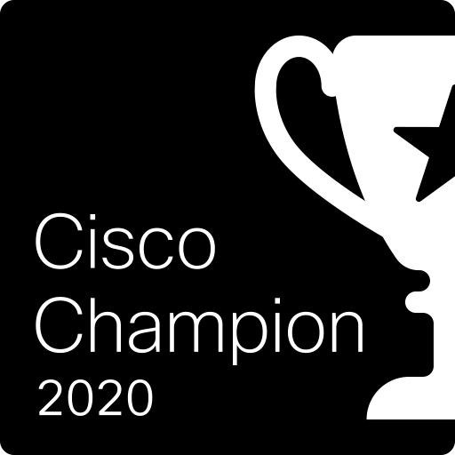

Matyas Prokop, Technology Director @ Natilik
Starting off as a founder of [Bubakov.net](http://bubakov.net/) (a community-led ISP) whilst still in his teens built on open source solutions, seeing the potential of community, open source and how network can shape communities and how community can shape the network.
He has since designed datacenters at Google, core mobile and internet provider networks and now stands as Technology Director at Natilik focusing on Multi-Cloud and DevOps. Alongside this he co-organize Network Automation Meet-Ups in London, speaking multiple times at HashiConf Global, Cisco Live and DevNet Create in US, Europe and APAC and constantly pushing boundaries and supporting this ever-evolving and exciting industry. He is 2x Cisco Live Distinguished Speaker, Cisco Champion and HashiCorp Ambassador.
Contacts
Git: https://git.matyasprokop.com/mprokop
LinkedIn: https://www.linkedin.com/in/matyasprokop/
Twitter: https://twitter.com/maty0609
